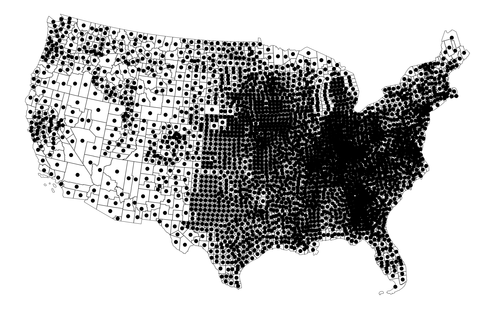
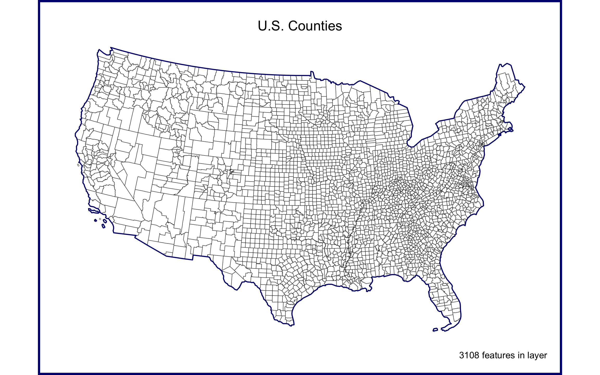
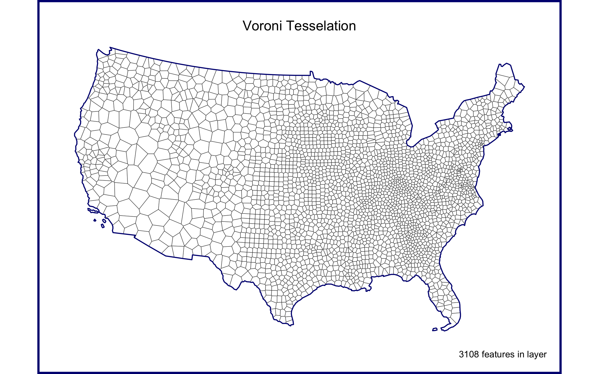
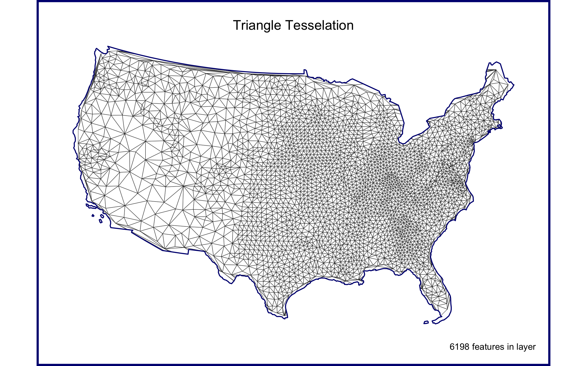
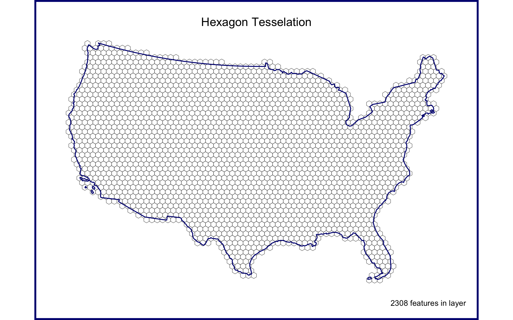
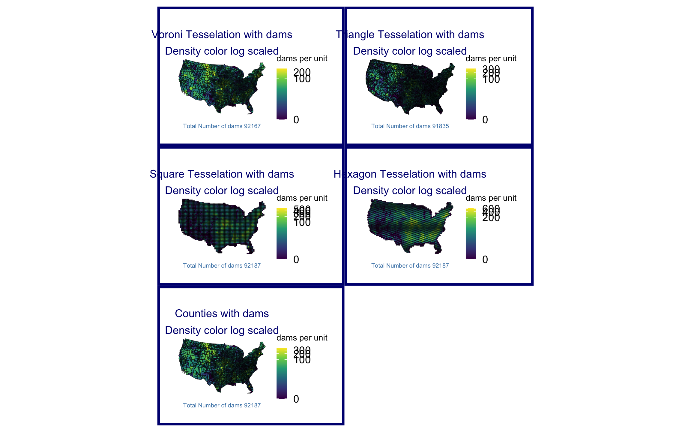
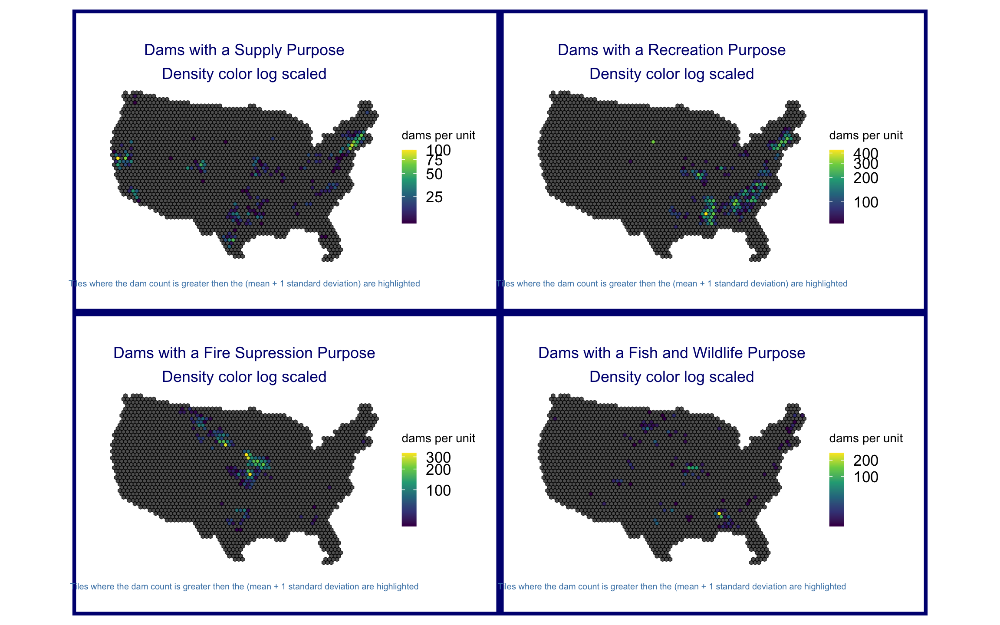
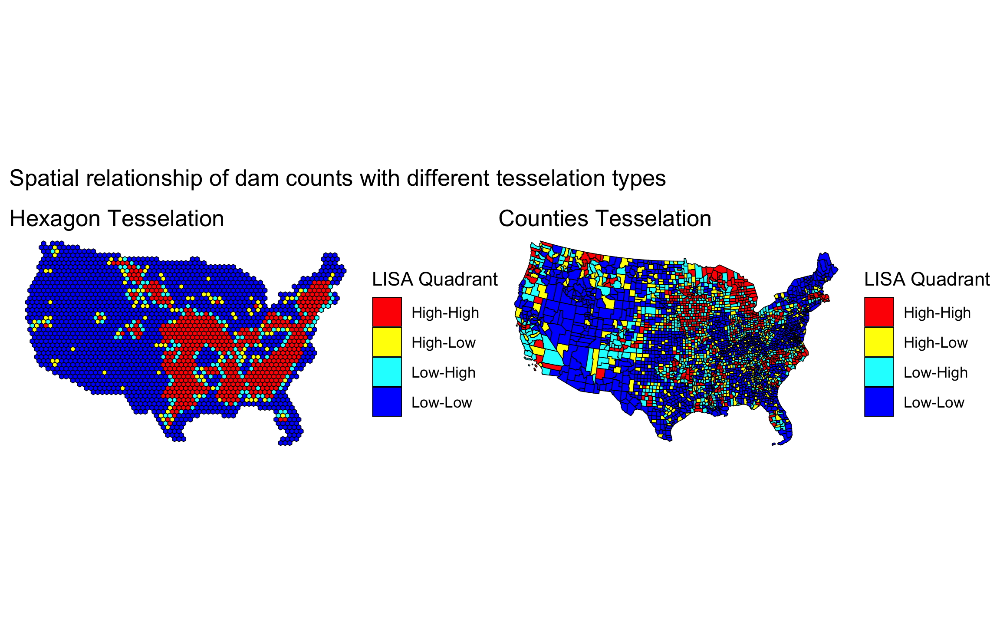

Lab 3: MAUP in Practice — Tessellations and Point-in-Polygon
National Dam Inventory (NID): From Counts to Local Clustering
Background
In this lab we will explore the impacts of tessellated surfaces and the modifiable areal unit problem (MAUP) using the National Dam Inventory maintained by the United States Army Corps of Engineers. The work requires writing reusable functions and careful consideration of feature aggregation/simplification, spatial joins, and data visualization. The end goal is to visualize the distribution of dams and their purposes across the country.
DISCLAIMER: This lab can be computationally intensive. For some steps you may be processing hundreds of millions of relations; run code chunk-by-chunk during development rather than knitting the whole document repeatedly. Your final knit may take a few minutes. Be proud — the report will summarize analyses over very large geometric relations.
This lab covers 4 main skills:
- Tessellating surfaces to discretize space
- Geometry simplification to expedite expensive intersections
- Writing functions to automate repetitive reporting and mapping tasks
- Point-in-polygon counts to aggregate point data
Graduate-Level Expectations
In addition to producing correct code and outputs, your submission should:
- Justify methodological choices: Why did you choose a particular tessellation
keeppercentage for simplification? How did you balance computational efficiency with map detail? - Document performance impacts: Measure and report computation time and geometric accuracy changes resulting from simplification. How do results differ?
- Apply spatial reasoning: Use spatial predicates (e.g.,
st_touches,st_contains) to identify and describe geometric relationships in the dam dataset that raw counts cannot reveal. - Compare across methods: When multiple tessellation approaches yield different clustering patterns, explain which pattern better supports real-world dam management decisions and why.
- Connect to lecture: Explicitly cite the MAUP problem, simplification algorithms (Douglas-Peucker vs. Visvalingam), and spatial predicate definitions from week 3 lectures in your analysis.
Libraries
Question 1:
Here we will prepare five tessellated surfaces from CONUS and write a function to plot them in a descriptive way.
Step 1.1
First, we need a spatial file of CONUS counties. For future area calculations we want these in an equal area projection (EPSG:5070).
To achieve this:
get an
sfobject of US counties (AOI::aoi_get(state = "conus", county = "all"))transform the data to
EPSG:5070
Code
us_counties <- AOI::aoi_get(state = "conus", county = "all") %>%
st_transform(crs = "EPSG:5070")
head(us_counties)Simple feature collection with 6 features and 14 fields
Geometry type: MULTIPOLYGON
Dimension: XY
Bounding box: xmin: 760612 ymin: 817718 xmax: 1027299 ymax: 1287809
Projected CRS: NAD83 / Conus Albers
state_region state_division feature_code state_name state_abbr name
1 3 6 0161526 Alabama AL Autauga
2 3 6 0161527 Alabama AL Baldwin
3 3 6 0161528 Alabama AL Barbour
4 3 6 0161529 Alabama AL Bibb
5 3 6 0161530 Alabama AL Blount
6 3 6 0161531 Alabama AL Bullock
fip_class tiger_class combined_area_code metropolitan_area_code
1 H1 G4020 388 <NA>
2 H1 G4020 380 <NA>
3 H1 G4020 NA <NA>
4 H1 G4020 142 <NA>
5 H1 G4020 142 <NA>
6 H1 G4020 NA <NA>
functional_status land_area water_area fip_code
1 A 1539634184 25674812 01001
2 A 4117656514 1132955729 01003
3 A 2292160149 50523213 01005
4 A 1612188717 9572303 01007
5 A 1670259090 14860281 01009
6 A 1613083467 6030667 01011
geometry
1 MULTIPOLYGON (((858778.6 10...
2 MULTIPOLYGON (((798890.8 91...
3 MULTIPOLYGON (((997958.5 10...
4 MULTIPOLYGON (((834517.5 11...
5 MULTIPOLYGON (((865138.9 12...
6 MULTIPOLYGON (((972148.2 10...Code
# st_crs(us_counties)Step 1.2
For triangle based tessellations we need point locations to serve as our “anchors”.
To achieve this:
generate county centroids using
st_centroidSince, we can only tessellate over a feature we need to combine or union the resulting 3,108
POINTfeatures into a singleMULTIPOINTfeatureSince these are point objects, the difference between union/combine is mute
Code
counties_cent <- st_centroid(us_counties) %>%
st_union()
ggplot() +
geom_sf(data = us_counties, fill = NA)+
geom_sf(data = counties_cent)+
theme_void()
Step 1.3
Tessellations/Coverage’s describe the extent of a region with geometric shapes, called tiles, with no overlaps or gaps.
Tiles can range in size, shape, area and have different methods for being created.
Some methods generate triangular tiles across a set of defined points (e.g. Voronoi and Delaunay triangulation)
Others generate equal area tiles over a known extent (st_make_grid)
For this lab, we will create surfaces of CONUS using using 4 methods, 2 based on an extent and 2 based on point anchors:
Tessellations :
st_voronoi: creates a Voronoi tessellationst_triangulate: triangulates a set of points (not constrained)
Coverages:
st_make_grid: creates a square grid covering the geometry of an sf or sfc objectst_make_grid(square = FALSE): creates a hexagonal grid covering the geometry of an sf or sfc objectThe side of coverage tiles can be defined by a cell resolution or a specified number of cell in the X and Y direction
For this step:
- Make a voroni tessellation over your county centroids (
MULTIPOINT) - Make a triangulated tessellation over your county centroids (
MULTIPOINT) - Make a gridded coverage with n = 70, over your counties object
- Make a hexagonal coverage with n = 70, over your counties object
In addition to creating these 4 coverage’s we need to add an ID to each tile.
To do this:
add a new column to each tessellation that spans from
1:n().Remember that ALL tessellation methods return an
sfcGEOMETRYCOLLECTION, and to add attribute information - like our ID - you will have to coerce thesfclist into ansfobject (st_sforst_as_sf)
Last, we want to ensure that our surfaces are topologically valid/simple.
To ensure this, we can pass our surfaces through
st_cast.Remember that casting an object explicitly (e.g.
st_cast(x, "POINT")) changes a geometryIf no output type is specified (e.g.
st_cast(x)) then the cast attempts to simplify the geometry.If you don’t do this you might get unexpected “TopologyException” errors.
Code
voroni <- st_voronoi(counties_cent) %>%
st_cast() %>%
st_as_sf() %>%
mutate(id = 1:n())
triangle <- st_triangulate(counties_cent) %>%
st_cast() %>%
st_as_sf() %>%
mutate(id = 1:n())
square <- st_make_grid(us_counties, n = 70) %>%
st_cast() %>%
st_as_sf() %>%
mutate(id = 1:n())
hex <- st_make_grid(us_counties, n = 70, square = FALSE) %>%
st_cast() %>%
st_as_sf() %>%
mutate(id = 1:n())
# plot(hex)Step 1.4
If you plot the above tessellations you’ll see that the Voronoi, Delaunay triangulation, hexagon, and square grids all produce regions far beyond the boundaries of CONUS.
We need to cut these boundaries to CONUS borders.
To do this, we need two different approaches: - st_intersection() for Voronoi and Delaunay (these tessellations create geometries that extend infinitely/far beyond the study area; intersection clips them at the exact boundary) - st_filter() for hexagon and square grids (these regular grids are already designed to fit; filtering keeps only the tiles that intersect CONUS)
Either way, we’ll need a geometry of CONUS to serve as our clipping feature. We can get this by unioning our existing county boundaries.
Code
# create a U.S. border object to trip tesselations
conus <- st_union(us_counties)Step 1.5
With a single feature boundary, we must carefully consider the complexity of the geometry. Remember, the more points our geometry contains, the more computations needed for spatial predicates our differencing. For a task like ours, we do not need a finely resolved coastal boarder.
To achieve this:
Simplify your unioned border using the Visvalingam algorithm provided by
rmapshaper::ms_simplify.Choose what percentage of vertices to retain using the
keepargument and work to find the highest number that provides a shape you are comfortable with for the analysis:
Code
# simplify to remove 95% of points, visually inspected and minimal loss of detail. Level of simplification will be sufficient for my analysis
simple_conus <- rmapshaper::ms_simplify(conus, keep = 0.05)
st_crs(simple_conus)Coordinate Reference System:
User input: EPSG:5070
wkt:
PROJCRS["NAD83 / Conus Albers",
BASEGEOGCRS["NAD83",
DATUM["North American Datum 1983",
ELLIPSOID["GRS 1980",6378137,298.257222101,
LENGTHUNIT["metre",1]]],
PRIMEM["Greenwich",0,
ANGLEUNIT["degree",0.0174532925199433]],
ID["EPSG",4269]],
CONVERSION["Conus Albers",
METHOD["Albers Equal Area",
ID["EPSG",9822]],
PARAMETER["Latitude of false origin",23,
ANGLEUNIT["degree",0.0174532925199433],
ID["EPSG",8821]],
PARAMETER["Longitude of false origin",-96,
ANGLEUNIT["degree",0.0174532925199433],
ID["EPSG",8822]],
PARAMETER["Latitude of 1st standard parallel",29.5,
ANGLEUNIT["degree",0.0174532925199433],
ID["EPSG",8823]],
PARAMETER["Latitude of 2nd standard parallel",45.5,
ANGLEUNIT["degree",0.0174532925199433],
ID["EPSG",8824]],
PARAMETER["Easting at false origin",0,
LENGTHUNIT["metre",1],
ID["EPSG",8826]],
PARAMETER["Northing at false origin",0,
LENGTHUNIT["metre",1],
ID["EPSG",8827]]],
CS[Cartesian,2],
AXIS["easting (X)",east,
ORDER[1],
LENGTHUNIT["metre",1]],
AXIS["northing (Y)",north,
ORDER[2],
LENGTHUNIT["metre",1]],
USAGE[
SCOPE["Data analysis and small scale data presentation for contiguous lower 48 states."],
AREA["United States (USA) - CONUS onshore - Alabama; Arizona; Arkansas; California; Colorado; Connecticut; Delaware; Florida; Georgia; Idaho; Illinois; Indiana; Iowa; Kansas; Kentucky; Louisiana; Maine; Maryland; Massachusetts; Michigan; Minnesota; Mississippi; Missouri; Montana; Nebraska; Nevada; New Hampshire; New Jersey; New Mexico; New York; North Carolina; North Dakota; Ohio; Oklahoma; Oregon; Pennsylvania; Rhode Island; South Carolina; South Dakota; Tennessee; Texas; Utah; Vermont; Virginia; Washington; West Virginia; Wisconsin; Wyoming."],
BBOX[24.41,-124.79,49.38,-66.91]],
ID["EPSG",5070]]Code
# plot(simple_conus)
ImportantValidation Checkpoint (Optional)
After simplification, verify the boundary is still valid and covers all dams:
Code
# Check the simplified boundary valid
st_is_valid(simple_conus)[1] TRUECode
# Check: Does it still contain all of CONUS?
st_bbox(simple_conus) # Should cover roughly [-125, 24] to [-66, 49] xmin ymin xmax ymax
-2360167.5 259157.7 2263786.2 3177425.2 Code
# Visual comparison
plot(conus, main = "Original")
Code
plot(simple_conus, main = "Simplified")
NoteSimplification: Boundary Only, Not Tessellation
Important distinction: This step simplifies the CONUS boundary container we use for clipping the tessellated surfaces. Simplification affects only the geometry of the clipping operation — it speeds up the intersection computation by reducing boundary vertices. Your tessellation tiles themselves remain high-resolution and unchanged. You are not simplifying the tessellation itself, only the container we clip with.
Once you are happy with your simplification, use the
mapview::nptsfunction to report the number of points in your original object, and the number of points in your simplified object.How many points were you able to remove? What are the consequences of doing this computationally?
Code
print(paste(round((1 - (mapview::npts(simple_conus) / mapview::npts(conus))) *100, 1), "percent of points removed by simplification"))[1] "94.9 percent of points removed by simplification"Removing 95% of points will greatly decrease computation time going for operations involving the border
Finally, crop all four grids to the CONUS boundary—but using different methods:
- Voronoi & Delaunay (geometry-based tessellations): Use
st_intersection()to cut these geometries at the CONUS boundary. These tessellations create boundaries that extend well beyond CONUS; intersection actually trims them. - Hexagon & Square grids (regular grids): Use
st_filter()to keep only tiles that touch CONUS. These grids are already regularly aligned; filtering just discards edge tiles without modifying them.
- Voronoi & Delaunay (geometry-based tessellations): Use
Code
# Intersection to clip triangle and vironi to exact border
voroni_trim <- st_intersection(voroni, simple_conus)
# compare run time with different geom
system.time(st_intersection(voroni, conus)) user system elapsed
0.772 0.011 0.782 Code
system.time(st_intersection(voroni, simple_conus)) user system elapsed
0.096 0.000 0.096 Code
triangle_trim <- st_intersection(triangle, simple_conus)
# function for evlauting compute times
compare_speed <- function(task1, task2, task1_label = "Task 1", task2_label = "Task 2") {
time1 <- system.time(task1)
time2 <- system.time(task2)
pct_decrease <- round((1 - (time2["elapsed"] / time1["elapsed"])) * 100, 1)
cat("Task 1 (", task1_label, "):", time1["elapsed"], "sec\n")
cat("Task 2 (", task2_label, "):", time2["elapsed"], "sec\n")
cat(pct_decrease, "percent change in operation speed\n")
invisible(list(task1 = time1, task2 = time2, pct_decrease = pct_decrease))
}
compare_speed(st_intersection(triangle, simple_conus), st_intersection(triangle,conus),
task1_label = "simple", task2_label = "complex")Task 1 ( simple ): 0.182 sec
Task 2 ( complex ): 1.566 sec
-760.4 percent change in operation speedCode
# Use st_filter with intersect predicate maintains individual cells that have a portion of their geometry wihtin the border
square_trim <- st_filter(square, simple_conus)
hex_trim <- st_filter(hex, simple_conus)
compare_speed(st_filter(hex, simple_conus), st_filter(hex, conus))Task 1 ( Task 1 ): 0.037 sec
Task 2 ( Task 2 ): 0.339 sec
-816.2 percent change in operation speed
TipWhy Different Cropping Methods?
The distinction matters for your spatial analysis:
st_intersection()on Voronoi/Delaunay: Produces edges/boundaries that align precisely with the CONUS border. Tiles at the edge are cut, not discarded. This is geometrically accurate but creates irregular edge shapes.st_filter()on hexagon/square grids: Keeps only complete regular tiles that touch CONUS, discarding edge tiles. The boundary is a stair-step pattern following the regular grid.
In Q3, when you compare these tessellations, you’ll notice that Voronoi and Delaunay have denser tile coverage (e.g., ~2800–6200 tiles) because they extend to the exact boundary. Hexagons and squares have fewer tiles (e.g., ~1900–2000) because they’re bound to a regular grid. This difference affects spatial statistics: denser tessellations reveal finer-grained patterns; coarser tessellations show broader regional structure. This is part of the Modifiable Areal Unit Problem (MAUP).
Step 1.6
The last step is to plot your tessellations. We don’t want to write out 5 ggplots (or mindlessly copy and paste
Instead, lets make a function that takes an sf object as arg1 and a character string as arg2 and returns a ggplot object showing arg1 titled with arg2.
The form of a function is:
Code
name = function(arg1, arg2) {
... code goes here ...
}For this function:
The name can be anything you chose, arg1 should take an
sfobject, and arg2 should take a character string that will title the plotIn your function, the code should follow our standard
ggplotpractice where your data is arg1, and your title is arg2The function should also enforce the following:
a
whitefilla
navybordera
sizeof 0.2`theme_void``
a caption that reports the number of features in arg1
- You will need to paste character stings and variables together.
make_map(triangle_trim, “Triangle Tesselation”)
make_map(square_trim, “Square Tesselation”)
make_map(hex_trim, “Hexagon Tesselation”)
Code
make_map <- function(sf_obj, title) {
plot <- ggplot(data = sf_obj)+
geom_sf(fill = "white", size = 0.2)+
geom_sf(data = simple_conus, color = "navy", size = 0.5, fill = NA) +
theme_void()+
labs(title = title,
caption = paste(nrow(sf_obj), "features in layer"))+
theme(plot.background = element_rect(colour = "navy", fill = NA, linewidth = 2),
plot.margin = margin(t = 0.5, r = 0.5, b = 0.5, l = 0.5, unit = "cm"),
plot.title = element_text(hjust = .5))
return(plot)
}Step 1.7
Use your new function to plot each of your tessellated surfaces and the original county data (5 plots in total):
Code
make_map(us_counties, "U.S. Counties")
Code
make_map(voroni_trim, "Voroni Tesselation")
Code
make_map(triangle_trim, "Triangle Tesselation")
Code
make_map(square_trim, "Square Tesselation")
Code
make_map(hex_trim, "Hexagon Tesselation")
Question 2:
In this question, we will write out a function to summarize our tessellated surfaces.
Step 2.1
First, we need a function that takes a sf object and a character string and returns a data.frame.
For this function:
The function name can be anything you chose, arg1 should take an
sfobject, and arg2 should take a character string describing the objectIn your function, calculate the area of
arg1; convert the units to km2; and then drop the unitsNext, create a
data.framecontaining the following:text from arg2
the number of features in arg1
the mean area of the features in arg1 (km2)
the standard deviation of the features in arg1
the total area (km2) of arg1
Return this
data.frame
Code
sum_tess <- function(sf_obj, description) {
area_km2 <- sf_obj %>%
st_area() %>%
units::set_units(km^2) %>%
units::drop_units()
df <- data.frame(
description = description,
n_features = nrow(sf_obj),
mean_area_km2 = mean(area_km2),
sd_area_km2 = sd(area_km2),
total_area_km2 = sum(area_km2)
)
return(df)
}Step 2.2
Use your new function to summarize each of your tessellations and the original counties.
Code
sum_tess(voroni_trim, "Voroni Tesselation") description n_features mean_area_km2 sd_area_km2 total_area_km2
1 Voroni Tesselation 3108 2604.426 2917.817 8094557Code
sum_tess(triangle_trim, "Triangle Tesselation") description n_features mean_area_km2 sd_area_km2 total_area_km2
1 Triangle Tesselation 6198 1290.368 1598.403 7997700Code
sum_tess(square_trim, "Square Tesselation") description n_features mean_area_km2 sd_area_km2 total_area_km2
1 Square Tesselation 3130 2761.289 1.182351e-11 8642833Code
sum_tess(hex_trim, "Hexagon Tesselation") description n_features mean_area_km2 sd_area_km2 total_area_km2
1 Hexagon Tesselation 2308 3781.179 1.813753e-11 8726961Step 2.3
Multiple data.frame objects can bound row-wise with bind_rows into a single data.frame
For example, if your function is called sum_tess, the following would bind your summaries of the triangulation and voroni object.
Code
tess_comp <- bind_rows(
sum_tess(voroni_trim, "Voroni Tesselation"),
sum_tess(triangle_trim, "Triangle Tesselation"),
sum_tess(square_trim, "Square Tesselation"),
sum_tess(hex_trim, "Hexagon Tesselation"),
sum_tess(us_counties, "Counties Tesselation")
)Step 2.4
Once your 5 summaries are bound (2 tessellations, 2 coverage’s, and the raw counties) print the data.frame as a nice table using knitr/kableExtra/flextable or your preferred table formatting package.
Tesselation | N features | Mean area (km2) | SD area (km2) | Total area (km2) |
|---|---|---|---|---|
Voroni Tesselation | 3,108 | 2,604.4 | 2,917.8 | 8,094,557 |
Triangle Tesselation | 6,198 | 1,290.4 | 1,598.4 | 7,997,700 |
Square Tesselation | 3,130 | 2,761.3 | 0.0 | 8,642,833 |
Hexagon Tesselation | 2,308 | 3,781.2 | 0.0 | 8,726,961 |
Counties Tesselation | 3,108 | 2,605.1 | 3,443.7 | 8,096,496 |
Step 2.5
Comment on the traits of each tessellation. Be specific about how these traits might impact the results of a point-in-polygon analysis in the contexts of the modifiable areal unit problem and with respect computational requirements.
The hexagon and square tessellations both have a standard area per unit, with the hexagon tessellation having the largest mean cell area and the squares having the second-largest. As random and consistently sized cells, summaries of features within these cells can be treated as spatial densities. The triangular and Voronoi tessellations rely on artificially constructed county centroids and vary in size. Because county boundaries have little relation to dams, which are usually constructed at the state or federal level, there is little validity in using these tessellation styles for a national inventory of dam features. Although the square tessellation technically provides higher spatial resolution, distances are biased along the diagonals compared to hexagons, and neighbor definitions are less clear with a square grid. Regarding the MAUP, my analysis is best suited to density metrics, so I want a standardized unit tessellation, and I am not concerned with local administrative boundaries at the county level.
Question 3: Dam Distribution Analysis & Tessellation Selection
The data we will analyze in this lab are from the U.S. Army Corps of Engineers National Dam Inventory (NID). This dataset documents ~91,000 dams in the United States and includes attributes such as design specifications, risk level, age, and purpose.
Dam management agencies face a critical question: Where are dams actually clustered, and how do I visualize that clustering in a way that supports infrastructure planning decisions? The answer depends on your choice of geographic boundaries—that is, your tessellation. Different tessellations will reveal different patterns of dam concentration. Your job in this question is to:
- Quantify dam distributions across multiple tessellation methods
- Understand how the modifiable areal unit problem (MAUP) creates different narratives from the same underlying data
- Select and justify the tessellation that best supports management decisions about dam clustering
For the remainder of this lab we will analyze the distributions of these dams using point-in-polygon analysis.
Step 3.1
In the tradition of this class - and true to data science/GIS work - you need to find, download, and manage raw data. THe NID dataset is available as a CSV download from the USACE website here. Grab the CSV.
- Return to your RStudio Project and read the data in using the
readr::read_csv- Use
janitor::clean_names()to standardize column names to snake_case (tidy data convention) - After reading the data in, be sure to remove rows that don’t have location values (
!is.na()) - Convert the
data.frameto asfobject by defining the coordinates and CRS - Transform the data to a CONUS AEA (EPSG:5070) projection - matching your tessellation
- Filter to include only those within your CONUS boundary
- Use
NoteData Cleaning with janitor
The NID CSV has messy column names (all caps with spaces). The janitor::clean_names() function converts them to clean snake_case (LONGITUDE → longitude, DAM NAME → dam_name). This is a lightweight utility that saves time and prevents typos in downstream code. It’s part of data wrangling best practice.
Code
# Prefer a local NID CSV named `nation.csv`; otherwise download to that filename
nid_url <- "https://nid.sec.usace.army.mil/api/nation/csv"
dir.create("data", showWarnings = FALSE)
nid_dest <- "data/nation.csv"
if (file.exists(nid_dest)) {
message("Using local NID file: ", nid_dest)
} else {
tryCatch({
message("Downloading NID CSV to: ", nid_dest)
download.file(nid_url, nid_dest, quiet = FALSE, mode = "wb")
}, error = function(e) {
message("NID download failed: ", e$message)
})
}
# read the CSV (will error if download failed and file missing)
if (!file.exists(nid_dest)) stop("NID CSV not found at ", nid_dest)
dams <- readr::read_csv(nid_dest, skip =1, show_col_types = FALSE) |>
janitor::clean_names()
usa <- AOI::aoi_get(state = "conus") %>%
st_union() %>%
st_transform(5070)
dams2 <- dams %>%
filter(!is.na(latitude)) %>%
st_as_sf(coords = c("longitude", "latitude"), crs = 4326) %>%
st_transform(5070) %>%
st_filter(usa)Step 3.2
Following the in-class examples develop an efficient point-in-polygon function that takes:
- points as
arg1, - polygons as
arg2, - The name of the id column as
arg3
The function should make use of spatial and non-spatial joins, sf coercion and dplyr::count. The returned object should be input sf object with a column - n - counting the number of points in each tile.
ImportantPoint-in-Polygon Function Design Notes
CRS Matching: Ensure
pointsandpolygonsare in the same CRS before callingst_join(). If they differ, usest_transform()to align them first.Empty Polygons:
st_join(...) %>% count(id)creates one row per intersection found. Polygons with zero intersections will appear in the result withn = 0only if you use a left join (default forst_join()). If a polygon has no points, make sure your result still includes it; if not, usest_join(...) %>% right_join(...)or initialize counts explicitly.Sparse vs. Dense Matrices: In this step you’re not creating matrices. However, in Q6.1 you’ll use
st_touches(..., sparse = FALSE)to build neighbor matrices explicitly. Here in Q3,st_join()handles the spatial predicate internally (st_intersectsby default), so you won’t set sparsity—just know thatst_join()scales well to large datasets. For troubleshooting performance: if your function runs slowly with 91,000 dams, check whether your tessellation polygons are topologically simple (usest_is_valid()).
Code
#PIP funciton
point_in_polygon <- function(points, polygon, poly_id = id, point_id = nid_id) {
if (!inherits(points, "sf")) stop("Points must be sf object")
if (!inherits(polygon, "sf")) stop("Polygon must be sf object")
tryCatch({
if (st_crs(points) != st_crs(polygon)) {
print("CRS do not match, transforming to polygon CRS")
points <- st_transform(points, st_crs(polygon))
}
}, error = function(e) {
print(paste("CRS transform failed:", e$message))
stop(e)
})
tryCatch({
result <- st_join(polygon, points) %>%
st_drop_geometry() %>%
group_by({{ poly_id }}) %>%
summarise(n = sum(!is.na({{ point_id }}))) %>%
left_join(polygon, by = join_by({{ poly_id }})) %>%
st_as_sf()
return(result)
}, error = function(e) {
print(paste("Spatial join failed:", e$message))
stop(e)
})
}Step 3.3
Apply your point-in-polygon function to each of your five tessellated surfaces where:
- Your points are the dams
- Your polygons are the respective tessellation
- The id column is the name of the id columns you defined.
Code
voroni_pip <- point_in_polygon(dams2, voroni_trim)
triangle_pip <- point_in_polygon(dams2, triangle_trim)
square_pip <- point_in_polygon(dams2, square_trim)
hex_pip <- point_in_polygon(dams2, hex_trim)
counties_id <- us_counties %>%
mutate(id = 1:n())
counties_pip <- point_in_polygon(dams2, counties_id)Step 3.4
Lets continue the trend of automating our repetitive tasks through function creation. This time make a new function that extends your previous plotting function.
For this function:
The name can be anything you chose, arg1 should take an
sfobject, and arg2 should take a character string that will title the plotThe function should also enforce the following:
the fill aesthetic is driven by the count column
nthe col is
NAthe fill is scaled to a continuous
viridiscolor ramptheme_voida caption that reports the number of dams in arg1 (e.g.
sum(n))- You will need to paste character stings and variables together.
Code
pip_plot <- function(sf_obj, title) {
plot <- ggplot(data = sf_obj)+
geom_sf(aes(fill = n))+
scale_fill_viridis_c(
trans = "log1p",
labels = scales::label_comma())+
theme_void()+
labs(title = title,
fill = "dams per unit",
caption = paste("Total Number of dams", sum(sf_obj$n)),
subtitle = "Density color log scaled"
)+
theme(plot.background = element_rect(colour = "navy", fill = NA, linewidth = 2),
plot.margin = margin(t = 0.5, r = 0.5, b = 0.5, l = 0.5, unit = "cm"),
plot.title = element_text(hjust = .5, size = 9, color = "navy"),
legend.title = element_text(size = 7),
plot.subtitle = element_text(hjust = .5, size = 9, color = "navy"),
legend.key.size = unit(0.3, "cm"),
plot.caption = element_text(hjust = .5 , size = 5, color = "steelblue"),
legend.text = element_text(size = ))
return(plot)
}Step 3.5
Apply your plotting function to each of the 5 tessellated surfaces with Point-in-Polygon counts:
Code
voroni_plot <- pip_plot(voroni_pip, "Voroni Tesselation with dams")
triangle_plot <- pip_plot(triangle_pip, "Triangle Tesselation with dams")
square_plot <- pip_plot(square_pip, "Square Tesselation with dams")
hex_plot <- pip_plot(hex_pip, "Hexagon Tesselation with dams")
counties_plot <- pip_plot(counties_pip, "Counties with dams")Step 3.6
Policy Analysis: Tessellation and Decision-Making
Now that you have dam counts across all five tessellation methods, compare the results. Specifically:
a. Create a side-by-side visualization (faceted or small multiples) showing dam clustering under each of the five tessellations. Use patchwork or cowplot to arrange the 5 plots you created in Step 3.5 for direct visual comparison.
Code
library(patchwork)
voroni_plot + triangle_plot + square_plot + hex_plot + counties_plot +
plot_layout(ncol = 2) 
b. Identify 2–3 geographic regions where tessellation choice produces substantially different patterns (e.g., one method shows a clear hotspot while another shows diffuse distribution). For each region, describe the pattern difference and explain why the tessellation geometry creates divergent results. Reference the characteristics from your Q2 summary (number of tiles, mean area, standard deviation).
There is a general geographic trend where the county based tessellations and standardized tessellations show similar patterns on the east coast, but start to diverge around the 100th meridian. The is a result of Western counties generally being much larger and more irregularly shaped. County area has a standard deviation of 3,443 km2 and a mean of 2,605.1 km2, demonstrating the large variability of area nationally. In the east, while counties are still variable, they are more uniform and layed out as a grid and as such local summaries are closer to densities. In the West the counties are much larger and more spatially variable in size, so they do a poorer job approximating density. For instance, with the square and hexagon tessellations, we see a clear dam density signal along the Lower Colorado River Basin, but the larger counties based units hide this pattern. The regular units also show a dam cluster in Central CA, but this area also has smaller counties than it’s surroundings, so county based tessellations don’t register this cluster.
c. Which single tessellation would you recommend to a dam operations manager seeking to understand geographic clustering? Justify your choice by addressing: - Does the tessellation align with natural or management decision-making units (e.g., river basins, states, hydrologic regions)? - Does it reveal meaningful patterns without over-fragmenting the landscape or creating artificial boundaries? - How does MAUP influence your recommendation—are other tessellations equally valid, just for different questions? - How did simplification affect your choice? Would a coarser or finer simplification (different keep percentage) change your recommendation? - What does “best supports management decisions” mean concretely in your context—does it matter more that hot spots are obvious, or that boundaries align with jurisdictions?
To understand geographic clustering, I would suggest a regular tessellation, as it captures density and is most useful for understanding national-level spatial patterns of dams. Between the two choices, the hexagon tessellation is better, as it doesn’t have a spatial diagonal bias like the squares, and the W matrices will have clearer-defined neighbor definitions. Even though the hexagons have the largest area, my maps show that spatial resolution is still well maintained, and local clustering is not lost compared to the other options.
Unlike county boundaries, which reflect historical and political conditions unrelated to dam distribution, hexagons impose a spatially neutral framework across the entire country. Every cell covers the same area and has the same number of neighbors, so a hotspot in the West and one in the East are directly comparable without any area-normalization step. For a national-level analysis where the question is where dams cluster rather than who manages them, this geometric consistency is the most important property.
Each tessellation is still valid, but as it relates to the MAUP, it depends on the question we are investigating. For instance, if I were more interested in which administrative units have the oldest infrastructure or the highest risk associated with their dams, using county units would reveal patterns about which counties may need federal support. This analysis is most concerned with a broad, national-level identification of patterns and hot spots, which is why I selected the hexagons. However, a natural next step would be a county-level analysis to identify specific jurisdictional regions that may need support for their infrastructure.
Question 4
The NID provides a comprehensive data dictionary here. In it we find that dam purposes are designated by a character code.
These are shown below for convenience (built using knitr on a data.frame called nid_classifier):
| abbr | purpose |
|---|---|
| I | Irrigation |
| H | Hydroelectric |
| C | Flood Control |
| N | Navigation |
| S | Water Supply |
| R | Recreation |
| P | Fire Protection |
| F | Fish and Wildlife |
| D | Debris Control |
| T | Tailings |
| G | Grade Stabilization |
| O | Other |
In the data dictionary, we see a dam can have multiple purposes.
In these cases, the purpose codes are concatenated in order of decreasing importance. For example,
SCRwould indicate the primary purposes are Water Supply, then Flood Control, then Recreation.A standard summary indicates there are over 400 unique combinations of dam purposes:
Code
unique(dams2$purposes) %>% length()[1] 574- By storing dam codes as a concatenated string, there is no easy way to identify how many dams serve any one purpose… for example where are the hydro electric dams?
To overcome this data structure limitation, we can identify how many dams serve each purpose by splitting the PURPOSES values (strsplit) and tabulating the unlisted results as a data.frame. Effectively this is double/triple/quadruple counting dams bases on how many purposes they serve:
The result of this would indicate:
Step 4.1
Your task is to create point-in-polygon counts for at least 4 of the above dam purposes:
You will use
greplto filter the complete dataset to those with your chosen purposeRemember that
greplreturns a boolean if a given pattern is matched in a stringgreplis vectorized so can be used indplyr::filter
For example:
Code
# Find flood control dams in the first 5 records:
dams2$purposes[1:5][1] "Recreation" "Recreation" "Other" "Other" "Water Supply"Code
grepl("S", dams2$purposes[1:5])[1] FALSE FALSE FALSE FALSE TRUEFor your analysis, choose at least four of the above codes, and describe why you chose them. Then for each of them, create a subset of dams that serve that purpose using dplyr::filter and grepl
Finally, use your point-in-polygon function to count each subset across your cropped tessellation from Q1.4 (e.g., hexagon_clipped or square_clipped).
Code
supply_subset <- dams2 %>%
filter(grepl("Water Supply", dams2$purposes) == TRUE) %>%
point_in_polygon(hex_trim)
rec_subset <- dams2 %>%
filter(grepl("Recreation", dams2$purposes) == TRUE) %>%
point_in_polygon(hex_trim)
fire_subset <- dams2 %>%
filter(grepl("Fire Protection", dams2$purposes) == TRUE) %>%
point_in_polygon(hex_trim)
fish_subset <- dams2 %>%
filter(grepl("Fish and Wildlife", dams2$purposes) == TRUE) %>%
point_in_polygon(hex_trim)Step 4.2
Now use your plotting function from Q3 to map these counts on the cropped tessellation.
But! you will use
gghighlightto only color those tiles where the count (n) is greater then the (mean + 1 standard deviation) of the setSince your plotting function returns a
ggplotobject already, thegghighlightcall can be added “+” directly to the function.The result of this exploration is to highlight the areas of the country with the most
Code
supply <- supply_subset %>%
pip_plot("Dams with a Supply Purpose")+
gghighlight(n > mean(n) + sd(n)) +
labs(caption = "Tiles where the dam count is greater then the (mean + 1 standard deviation) are highlighted")
rec <- rec_subset %>%
pip_plot("Dams with a Recreation Purpose")+
gghighlight(n > mean(n) + sd(n)) +
labs(caption = "Tiles where the dam count is greater then the (mean + 1 standard deviation) are highlighted")
fire <- fire_subset %>%
pip_plot("Dams with a Fire Supression Purpose")+
gghighlight(n > mean(n) + sd(n)) +
labs(caption = "Tiles where the dam count is greater then the (mean + 1 standard deviation are highlighted")
fish <- fish_subset %>%
pip_plot("Dams with a Fish and Wildlife Purpose")+
gghighlight(n > mean(n) + sd(n)) +
labs(caption = "Tiles where the dam count is greater then the (mean + 1 standard deviation are highlighted")
supply + rec + fire + fish + plot_layout(ncol = 2)
Step 4.3
Comment on the geographic distribution of dams you found. Does it make sense? How might the tessellation you chose impact your findings? How does the distribution of dams coincide with other geographic factors such as river systems, climate, ect?
The geographic distribution of dams across all four purpose categories aligns closely with expected environmental and demographic geography. Supply dams in the West cluster along the Pacific coast and the Southwest and match population centers (Colorado Front Range, L.A., and Bay Area). Recreation dams are concentrated in the Northeast and the Appalachian corridor, reflecting high population density and a long history of reservoir development (TVA). Fire suppression dams are concentrated in the Great Plain, likely reflecting the region’s grassland fire risk and limited natural water availability across flat terrain. Fish and wildlife dams are the most spatially diffuse. The hexagon tessellation’s consistent cell size means these patterns reflect spatial clustering, though its coarse resolution may average out finer in specific regions.
Optional: Connect to Q6 — For purposes you chose in Q4, hypothesize in 1–2 sentences: “Will [irrigation/hydroelectric] dams show the same LISA hotspots as all dams in Q6, or different patterns? Why?” After completing Q6, revisit this hypothesis.
Question 5: Spatial Correlation of Dam Attributes — Introduction to Spatial Regression
Dam characteristics—such as age, surface area, storage capacity, and purpose—vary geographically. Understanding the spatial structure of these relationships is foundational to spatial regression modeling (upcoming topics). In this question, you’ll examine whether dam attributes exhibit spatial dependence and assess whether neighboring tiles have correlated characteristics.
NoteSpatial Regression Motivation (Week 3-1 Foundation)
Standard regression assumes observations are independent. But spatial data often violates this: dams in the Pacific Northwest likely share design and management practices, leading to spatially correlated residuals. This spatial dependence can bias confidence intervals and inflate significance tests in standard OLS regression.
The solution involves spatial lag models (Spatial Autoregressive, SAR) or spatial error models (SEM) that explicitly model dependence via neighbor relationships. This lab asks: Do your tessellation neighborhoods reveal spatial structure in dam attributes?
For this question, use your cropped tessellation from Q1.4 (your recommended tessellation from Q3, clipped to the CONUS boundary). You’ll examine whether dam attributes (age, size, count) are spatially autocorrelated—evidence that neighboring tiles have similar values, violating independence assumptions.
Step 5.1
Aggregate Dam Attributes by Tile
Using your cropped tessellation from Q1.4 (your recommended grid from Q3, clipped to CONUS boundary), compute mean and variance of key dam attributes within each tile. The NID dataset typically includes:
- Age:
year_completedor similar (compute mean age per tile) - Size:
surface_area_acresornormal_pool_elevation(compute mean per tile) - Purpose codes:
purposesfield (compute dominant purpose per tile; count of dams by purpose)
Aggregate as follows:
Code
# Suggested workflow (write your own implementation):
# 1) spatial join dams to your cropped tessellation
# 2) group by tile id and summarize n_dams, mean_year_completed, mean_surface_area
# 3) join summaries back to geometry and preserve zero-dam tiles
# 4) inspect distributions before mappingProduce visualizations showing spatial patterns:
- Map 1: Mean dam age by tile (use viridis scale)
- Map 2: Mean surface area by tile
- Map 3: Dam count by tile (you already have this from Q3)
Do you see geographic clustering of old vs. new dams? Large vs. small dams?
Code
dam_attr <- hex_trim %>%
st_join(dams2) %>%
st_drop_geometry() %>%
group_by(id) %>%
summarise(
n_dams = sum(!is.na(nid_id)),
mean_year_completed = mean(year_completed, na.rm = TRUE),
mean_surface_area = mean(surface_area_acres, na.rm = TRUE)
) %>%
right_join(hex_trim, by = "id") %>%
replace_na(list(
mean_year_completed = NA,
mean_surface_area = NA
)) %>%
st_as_sf()
attr_plot <- function(sf_obj, title, attr, n_breaks = 5) {
plot <- ggplot(data = sf_obj)+
geom_sf(aes(fill = {{attr}}))+
scale_fill_viridis_c(
trans = "log1p",
labels = scales::label_comma(),
n.breaks = n_breaks)+
theme_void()+
labs(title = title)+
theme(plot.background = element_rect(colour = "navy", fill = NA, linewidth = 2),
plot.margin = margin(t = 0.5, r = 0.5, b = 0.5, l = 0.5, unit = "cm"),
plot.title = element_text(hjust = .5, size = 13, color = "navy"),
legend.title = element_text(size = 9))
return(plot)
}
attr_plot(dam_attr, "Dam Count by Tile", attr = n_dams, n_breaks = 4)
Code
attr_plot(dam_attr, "Mean Dam Age by Tile", attr = mean_year_completed)+
scale_fill_viridis_c()
Code
attr_plot(dam_attr, "Mean Surface Area by Tile", attr = mean_surface_area, n_breaks = 2)
Step 5.2
Neighbor Correlation: Local Spatial Variation
For your tessellation’s neighbor matrix (from Q6), compute the spatial lag of dam attributes: the average value of an attribute in a tile’s neighbors. This reveals whether spatial neighbors have similar dam attributes—a key signal that observations are not independent (violating OLS assumptions).
WarningCritical: NA Handling in Spatial Lag Calculations
Many tiles may have zero dams (NAs for attributes like mean_year_completed, mean_surface_area). When you compute the spatial lag via matrix multiplication, these NAs propagate and can cause cor() to fail with “no complete element pairs.”
Solution: Impute before spatial lag calculation
- Replace NAs in the attribute with the global mean (mean across all tiles, ignoring NAs)
- Compute the spatial lag on the imputed data
- When correlating, use only tiles that had original data (not imputed)
This preserves statistical integrity: neighbors’ contributions are computed correctly, but you only correlate where real observations exist.
Code
# Suggested workflow (write your own implementation):
# 1) build vectors for count, age, and size attributes by tile
# 2) handle NAs explicitly before matrix multiplication
# 3) compute spatial lag as W_std %*% attribute
# 4) correlate each attribute with its lag
# 5) report values and classify as weak/moderate/strong with your own thresholdsSummarize in a table:
Code
# Create a compact summary table with:
# - attribute name
# - correlation with spatial lag
# - qualitative strength label
# Then add a 1-2 sentence interpretation below the table.Code
library(ape)
# vectors of attr
# No NAs
counts_vec <- dam_attr$n_dams
# have NAs
age_vec <- dam_attr$mean_year_completed
size_vec <- dam_attr$mean_surface_area
# Impute mean
impute_mean <- function(x) {
x[is.na(x)] <- mean(x, na.rm = TRUE)
x
}
age_imputed <- impute_mean(age_vec)
size_imputed <- impute_mean(size_vec)
# real obs mask
age_obs <- !is.na(age_vec)
size_obs <- !is.na(size_vec)
# create a W matrix
make_W <- function(tesselation) {
W <- st_touches(tesselation, sparse = FALSE) * 1
diag(W) <- 0
rs <- rowSums(W)
W <- W / ifelse(rs == 0, 1, rs)
W[!is.finite(W)] <- 0
W
}
hex_W <- make_W(hex_trim)
# logic check hex tess has 2308 cells
nrow(hex_W) == 2308[1] TRUECode
# compute lags
lag_count <- as.numeric(hex_W %*% counts_vec)
lag_age <- as.numeric(hex_W %*% age_imputed)
lag_size <- as.numeric(hex_W %*% size_imputed)
# compute corr
cor_count <- cor(counts_vec, lag_count)
lag_cor <- function(attr_vec, attr_lag, obs_mask) {
cor(attr_vec[obs_mask], attr_lag[obs_mask])
}
cor_age <- lag_cor(age_vec, lag_age, age_obs)
cor_size <- lag_cor(size_vec, lag_size, size_obs)
# compute Moran's I
count_m <- ape::Moran.I(counts_vec, hex_W)
count_m$p.value[1] 0Code
age_m <- ape::Moran.I(age_vec, hex_W, na.rm = TRUE)
age_m$p.value[1] 0Code
size_m <- ape::Moran.I(size_vec, hex_W, na.rm = TRUE)
as.numeric(size_m$p.value)[1] 0.8287444Code
corr_df <- data.frame(matrix(c(
'Count' , round(cor_count, 2), "High", "0",
'Age' , round(cor_age, 2), "Medium", "0",
'Size' , round(cor_size, 2), 'Low', "0.83"),
ncol = 4, byrow = T)) %>%
setNames(c("attr", "cor", "qual_cor", "m_pvalue"))
hexagon_spatial <- flextable(corr_df) %>%
set_header_labels(
attr = "Dam attribute",
cor = "Spatial lag correlation",
qual_cor = "Correlation level",
m_pvalue = "Moran's I p-value"
) %>%
set_caption(caption = "Spatial Correlation of Dam Attributes by Hexagon") %>%
autofit()Turn workflow into a function
Code
# disclaimer, I used Claude Sonnet 4.6 to transform my workflow above into a function
analyze_spatial_autocorr <- function(tessellation, dam_attr, tess_name = "Tessellation") {
counts_vec <- dam_attr$n_dams
age_vec <- dam_attr$mean_year_completed
size_vec <- dam_attr$mean_surface_area
impute_mean <- function(x) {
x[is.na(x)] <- mean(x, na.rm = TRUE)
x
}
age_imputed <- impute_mean(age_vec)
size_imputed <- impute_mean(size_vec)
age_obs <- !is.na(age_vec)
size_obs <- !is.na(size_vec)
W <- st_touches(tessellation, sparse = FALSE) * 1
diag(W) <- 0
rs <- rowSums(W)
W <- W / ifelse(rs == 0, 1, rs)
W[!is.finite(W)] <- 0
lag_count <- as.numeric(W %*% counts_vec)
lag_age <- as.numeric(W %*% age_imputed)
lag_size <- as.numeric(W %*% size_imputed)
# Correlations
lag_cor <- function(attr_vec, attr_lag, obs_mask) {
cor(attr_vec[obs_mask], attr_lag[obs_mask], use = "complete.obs")
}
cor_count <- cor(counts_vec, lag_count, use = "complete.obs")
cor_age <- lag_cor(age_vec, lag_age, age_obs)
cor_size <- lag_cor(size_vec, lag_size, size_obs)
# Moran's I
count_m <- ape::Moran.I(counts_vec, W)
age_m <- ape::Moran.I(age_vec, W, na.rm = TRUE)
size_m <- ape::Moran.I(size_vec, W, na.rm = TRUE)
# Classify correlation strength
classify_cor <- function(r) {
abs_r <- abs(r)
case_when(
abs_r >= 0.75 ~ "High",
abs_r >= 0.50 ~ "Moderate",
abs_r >= 0.25 ~ "Low",
abs_r >= 0.00 ~"Negligable"
)
}
# 9. Build and return results table
results_table <- data.frame(
tessellation = tess_name,
attr = c("Count", "Age", "Size"),
cor = round(c(cor_count, cor_age, cor_size), 2),
qual_cor = classify_cor(c(cor_count, cor_age, cor_size)),
moran_I = round(c(count_m$observed, age_m$observed, size_m$observed), 3),
m_pvalue = round(c(count_m$p.value, age_m$p.value, size_m$p.value), 3)
)
return(results_table)
}Step 5.3
Global Question: Do neighboring tiles resemble each other overall, or is the pattern weak?
Create a single Moran’s I scatterplot for one dam attribute from Step 5.2 (for example, mean year completed or dam count). Use standardized values on both axes: the attribute on the x-axis and the spatial lag on the y-axis. The plot should show whether points concentrate along the diagonal or remain widely dispersed.
Your interpretation should focus on the overall pattern, not on specific regions. In particular, explain whether the correlation from Step 5.2 suggests strong, moderate, or weak spatial dependence and whether the scatterplot supports that conclusion.
Do not create a geographic map here. Save local hotspot mapping for Q6.
TipStandardization Details
Why standardize? Centering and scaling puts the attribute and spatial lag on the same scale (mean=0, SD=1), making it easy to identify quadrants and interpret outliers.
scale(x, center=TRUE, scale=TRUE)[, 1]Returns a numeric vector (not a matrix). Use [, 1] to extract it, or use as.vector() explicitly.
Code
# Suggested workflow (write your own implementation):
# 1) standardize the selected attribute and its spatial lag
# 2) assign HH / LL / HL / LH quadrants by sign of (z, lag_z)
# 3) produce a Moran scatterplot with dashed axes at 0
# 4) report quadrant counts and interpret what dominatesCode
lag_age_scaled <- as.vector(as.numeric(scale(lag_age)))
age_scaled <- as.vector(as.numeric(scale(age_vec)))
age_morans <- tibble(
x = age_scaled,
lag_x = lag_age_scaled,
quadrant = case_when(
x > 0 & lag_x > 0 ~ "High-High",
x < 0 & lag_x < 0 ~ "Low-Low",
x > 0 & lag_x < 0 ~ "High-Low",
x < 0 & lag_x > 0 ~ "Low-High"
)
)
age_morans %>%
ggplot(aes(x = x, y = lag_x, color = quadrant))+
geom_point()+
theme_classic()+
geom_hline(yintercept = 0, linetype = "dashed", color = "black")+
geom_vline(xintercept = 0, linetype = "dashed", color = "black")+
labs(
x = "Observed value",
y = "Spatial lag value",
title = "Moran's I Plot of Dam Age",
subtitle = "Cell values computed with a Hexagon Tesselation",
color = "Quadrant"
)+
geom_abline(slope = 1, color = "navy")
Code
# Make a function to plot lags
lag_plot <- function(tessellation, dam_attr, attr_name = "n_dams") {
vec <- dam_attr[[attr_name]]
impute_mean <- function(x) {
x[is.na(x)] <- mean(x, na.rm = TRUE)
x
}
vec_imputed <- impute_mean(vec)
W <- st_touches(tessellation, sparse = FALSE) * 1
diag(W) <- 0
rs <- rowSums(W)
W <- W / ifelse(rs == 0, 1, rs)
W[!is.finite(W)] <- 0
lag <- as.numeric(W %*% vec_imputed)
lag_scaled <- as.vector(as.numeric(scale(lag)))
vec_scaled <- as.vector(as.numeric(scale(vec)))
table <- tibble(
x = vec_scaled,
lag_x = lag_scaled,
quadrant = case_when(
x > 0 & lag_x > 0 ~ "High-High",
x < 0 & lag_x < 0 ~ "Low-Low",
x > 0 & lag_x < 0 ~ "High-Low",
x < 0 & lag_x > 0 ~ "Low-High"
)
)
plot <- table %>%
ggplot(aes(x = x, y = lag_x, color = quadrant))+
geom_point()+
theme_classic()+
geom_hline(yintercept = 0, linetype = "dashed", color = "black")+
geom_vline(xintercept = 0, linetype = "dashed", color = "black")+
labs(
x = "Observed value",
y = "Spatial lag value",
color = "Quadrant"
)+
geom_abline(slope = 1, color = "navy")
return(plot)
}Step 5.4
Global Interpretation of Spatial Patterns
TipWriting Guide: Interpreting Spatial Correlation
Use this structure to organize your response:
- State your findings clearly — cite specific correlation values from your Step 5.2 table. Which attributes show the strongest clustering?
- Connect to structure — what does the scatterplot suggest about broad spatial organization, without moving into local mapping yet?
- Explain why — relate to dam history, geology, hydrology, or policy at the regional scale
- Analyze patterns — describe what the Moran scatterplot and correlation values reveal about overall dam distributions
Write 2–3 paragraphs (400–600 words) addressing:
a. Spatial Clustering Patterns (Quantitative + Geographic)
Which attributes show the strongest spatial lag correlations (from your Step 5.2 table)? Are correlations > 0.5 (strong) or 0.2–0.5 (moderate)?
- Dam count: Often strongly correlated because high dam density naturally creates neighbors with many dams.
- Dam age: Likely shows clustering if dams were built in regionally-coherent eras (e.g., 1930s TVA construction, 1960s–70s Western expansion).
- Dam size: May be clustered if geology/hydrology favors larger dams in specific regions.
For each attribute, describe whether the clustering seems broad or weak. Does the correlation make geographic sense? Why should dam characteristics be similar in neighboring areas?
b. Moran Scatterplot Interpretation (Visualization)
From your Moran scatterplot, describe the spatial distribution of points:
- Do points cluster near the diagonal, suggesting positive spatial autocorrelation?
- Are there many outliers away from the diagonal, suggesting weaker dependence or heterogeneous neighborhoods?
- Does the pattern appear stronger for some attributes than others?
c. Spatial Structure Implications
What do these correlation values and Moran scatterplot patterns tell us about dam infrastructure spatial organization? Given your findings, write a brief conclusion synthesizing: - Are neighboring tiles genuinely similar in dam characteristics, or is the clustering weak? - What management or hydrologic factors drive these patterns? - How do findings from your Moran analysis here compare to what you observed in Q4 (dam purposes geography)?
My answer:
The correlation between the observed value and the spatial lag shows that the number of dams per cell is highly correlated to its neighboring cells, and age is slightly less correlated. This makes sense, dam denisty is a function of local water resources, which are often spatially clustered along rivers or within watersheds and the age of development would similarly be clustered and relate to the overall time the area was developed. Size has low spatial correlation due to the fact that size is a function of complex social and hydrologic constraints which do not spatially cluster.
My global spatial correlation of 0.64 for dam age is congruent with my Moran’s I plot. I used a hexagon tessellation and defined my W matrix such that neighbors are defined as cells touching each other so that every cell has n = 6 neighbors. The correlation of 0.64 between my spatial lag and observed values suggest a moderate global spatial autocorrelation. The plot concurs with this as we see a moderate level of concentration along the 1-1 diagonal. However, there are still values in the low-high and high-low quadrants as we would expect.
It makes sense that we see spatial correlations for many dam attributes. As we saw in the analysis of use, dam features often relate to regional hydrology and societal needs (for instance in the West, supply reservoirs are clustered around population centers).
Note: In future weeks, we’ll explore how spatial structure revealed here relates to statistical modeling of dam attributes.
Step 5.5 (Optional) — Hypothesis Checkpoint
Before moving to Q6, answer this question to verify your understanding:
Given your correlation results from Step 5.2, what do you expect to see in a Moran scatterplot (Q6)?
- If all correlations are > 0.5: Do you expect most points to cluster in the upper-right (HH) and lower-left (LL) quadrants, or scattered across all four?
- If correlations are weak (< 0.3): Would you expect many High-Low or Low-High outliers?
- Based on dam geography (e.g., TVA region, Colorado River Basin), where do you predict hotspots (HH) and coldspots (LL) will concentrate?
Write 2–3 sentences predicting Q6 outcomes before you compute LISA. After Q6, revisit this prediction to see if reality matched your expectation.
I expect to see traits with higher Moran’s I to have a scatter plot that is more concentrated along a 1-1 diagonal and with the majority of points in the H-H and L-L quadrants.
Question 6: Local Spatial Autocorrelation (LISA) — Mapping Hotspots and Coldspots
In this question, you’ll analyze LISA using your recommended tessellation from Q3 AND counties as a required comparison unit. This contrast (regular tessellation vs administrative boundaries) reveals MAUP much more clearly than comparing two regular grids.
While global statistics like Moran’s I (Q5) test for clustering “on average,” spatial patterns are rarely uniform. Some regions have dense hotspots (e.g., TVA region with concentrated dam infrastructure), while others are sparse coldspots (remote areas, deserts). Local Indicator of Spatial Autocorrelation (LISA) decomposes global clustering into local patterns, revealing where hotspots and coldspots occur—critical for targeted management interventions.
In this question, you’ll compute LISA using your cropped recommended tessellation (from Q1.4) and CONUS counties as the alternative support. This gives a direct test of how local clustering changes when analysis units shift from equal-area tiles to administrative units.
NoteLISA Concept (Week 3-1 Lectures)
LISA compares each tile’s standardized dam count (\(z_i\)) to the standardized spatial lag (\(\text{lag}_z\)):
\[\text{lag}_z = \frac{1}{w_i} \sum_{j \in N(i)} w_{ij} z_j\]
where neighbors \(j \in N(i)\) are adjacent tiles, and \(w_{ij}\) = row-standardized adjacency weight (1 if touching, 0 otherwise).
The resulting LISA quadrants reveal: - High-High (HH): High dam count, high-count neighbors → hotspot - Low-Low (LL): Low dam count, low-count neighbors → coldspot
- High-Low (HL): High count, low neighbors → potentially isolated cluster edge - Low-High (LH): Low count, high neighbors → potential anomaly or outlier
Step 6.1
Crop your tessellations to ensure consistent boundaries:
a. Use your recommended tessellation from Q3 (e.g., hexagon grid). Clip it to the CONUS boundary with st_filter(tessellation, boundary).
b. Use counties as the required alternative comparison unit (no extra clipping needed if your counties object is already CONUS-only).
c. For each clipped tessellation, recompute dam counts using point-in-polygon joining to ensure correct aggregation within the cropped geometry.
TipCropping Tessellations Correctly
# Recommended tessellation (e.g., hexagon_grid)
hex_cropped <- st_filter(hexagon_grid, usa_boundary)
# Required comparison unit: counties (already CONUS)
county_units <- counties_sf
# Recompute dam counts on cropped grids
# (Use your point_in_polygon function or st_join + count pattern)
hex_dams <- st_join(hex_cropped, dams_sf) %>%
group_by(id) %>%
summarise(n = n(), .groups = "drop")
county_dams <- st_join(county_units, dams_sf) %>%
group_by(id) %>%
summarise(n = n(), .groups = "drop")Important: Cropping changes tile counts and boundary geometries. Re-aggregate dam counts after cropping to match the new tile geometry.
Code
# double check CRS
st_crs(hex_trim) == st_crs(us_counties)[1] TRUECode
# identidy unique county id column
length(unique(us_counties$feature_code)) == nrow(us_counties)[1] TRUECode
##Repeated workflow from Q 5 for counties
counties_dam_attr <- us_counties %>%
st_join(dams2) %>%
st_drop_geometry() %>%
group_by(feature_code) %>% #use feature code here as unique county ID
summarise(
n_dams = sum(!is.na(nid_id)),
mean_year_completed = mean(year_completed, na.rm = TRUE),
mean_surface_area = mean(surface_area_acres, na.rm = TRUE)
) %>%
right_join(us_counties, by = "feature_code") %>% #counties feature code again
replace_na(list(
mean_year_completed = NA,
mean_surface_area = NA
)) %>%
select(1:4, geometry) %>%
st_as_sf()Step 6.2
Compute neighbors and spatial lag for your recommended tessellation:
a. Create the binary neighbor adjacency matrix using st_touches(..., sparse = FALSE). Include only tiles within the cropped boundary.
b. Remove self-neighbors: diag(W) <- 0
c. Row-standardize weights: divide each row by its sum, handling isolated tiles.
d. Compute spatial lag: \(\text{lag} = W_{\text{std}} \times \text{dam\_counts}\)
e. Standardize both dam counts and spatial lag (z-score normalization).
ImportantValidation Checkpoint (Optional but Recommended)
After computing the neighbor matrix, verify it’s valid:
Code
# Check 1: Is the matrix symmetric? (for undirected adjacency)
all(neighbor_matrix == t(neighbor_matrix))
# Check 2: Are all rows row-standardized (divide by row sum)?
rowSums(neighbor_weights) # Should all be 1 (or 0 for isolated tiles)
# Check 3: Are there isolated tiles (no neighbors)?
sum(rowSums(neighbor_weights) == 0)
# If any isolated tiles, document how you'll handle them in spatial lag calculationCode
# Compute lag correlation and Moran's I for counties tesselation
counties_W <- make_W(us_counties)
counties_spatial <- analyze_spatial_autocorr(us_counties, counties_dam_attr, tess_name = "Counties")
counties_table <- counties_spatial %>%
select(!tessellation) %>%
flextable() %>%
set_header_labels(
attr = "Dam attribute",
cor = "Spatial lag correlation",
qual_cor = "Correlation level",
moran_I = "Moran's I",
m_pvalue = "Moran's I p-value"
) %>%
set_caption(caption = "Spatial Correlation of Dam Attributes by County") %>%
autofit()
counties_tableDam attribute | Spatial lag correlation | Correlation level | Moran's I | Moran's I p-value |
|---|---|---|---|---|
Count | 0.25 | Negligable | 0.131 | 0.000 |
Age | 0.31 | Low | 0.171 | 0.000 |
Size | 0.00 | Negligable | -0.001 | 0.849 |
Code
hexagon_spatialDam attribute | Spatial lag correlation | Correlation level | Moran's I p-value |
|---|---|---|---|
Count | 0.84 | High | 0 |
Age | 0.64 | Medium | 0 |
Size | 0 | Low | 0.83 |
Step 6.3
LOCAL Question: WHERE specifically are high-high, low-low, high-low, and low-high clusters? (Answer: Geographic map showing which regions belong to which quadrant)
Two Visualizations:
a) Moran Scatterplot (Reference): - Same as Q5, showing which tile belongs to which quadrant - Primarily for reference; the interesting insight is now geographic
b) LISA Geographic Map (PRIMARY OUTPUT): - Choropleth map of your tessellation colored by LISA quadrant - HH (red) = hotspots with hotspot neighbors → TVA region, Colorado Basin, etc. - LL (blue) = coldspots with coldspot neighbors → Great Basin, deserts, etc. - HL (yellow) = anomalies: high counts surrounded by sparse tiles (cluster edges) - LH (cyan) = anomalies: sparse tiles surrounded by high-count neighbors (rare)
Key Interpretation: The LISA map reveals which specific regions exhibit local clustering. This is actionable: dense regions need intensive management; sparse regions need different strategies. The quadrant distribution (% of tiles in HH vs. LL) reveals whether the landscape is dominated by hotspots, coldspots, or mixed.
Code
c_count_plot <- lag_plot(us_counties, counties_dam_attr, attr_name = "n_dams")+
labs(title = "Counites with Dam Count")
c_age_plot<- lag_plot(us_counties, counties_dam_attr, attr_name = "mean_year_completed")+
labs(title = "Counites with Dam Age")
c_size_plot<- lag_plot(us_counties, counties_dam_attr, attr_name = "mean_surface_area")+
labs(title = "Counites with Dam Size")
h_count_plot <- lag_plot(hex_trim, dam_attr, attr_name = "n_dams")+
labs(title = "Hexagon with Dam Count")
h_age_plot<- lag_plot(hex_trim, dam_attr, attr_name = "mean_year_completed")+
labs(title = "Hexagon with Dam Age")
h_size_plot<- lag_plot(hex_trim, dam_attr, attr_name = "mean_surface_area")+
labs(title = "Hexagon with Dam Size")
library(patchwork)
(c_count_plot + c_age_plot + c_size_plot) / (h_count_plot + h_age_plot + h_size_plot) +
plot_annotation(title = "County vs. Hexagon Tesselations")
Code
# modify lag_plot function for mapping
lisa_map <- function(tessellation, dam_attr, attr_name = "n_dams", title) {
vec <- dam_attr[[attr_name]]
impute_mean <- function(x) {
x[is.na(x)] <- mean(x, na.rm = TRUE)
x
}
vec_imputed <- impute_mean(vec)
W <- st_touches(tessellation, sparse = FALSE) * 1
diag(W) <- 0
rs <- rowSums(W)
W <- W / ifelse(rs == 0, 1, rs)
W[!is.finite(W)] <- 0
lag <- as.numeric(W %*% vec_imputed)
lag_scaled <- as.vector(as.numeric(scale(lag)))
vec_scaled <- as.vector(as.numeric(scale(vec)))
table <- tibble(
x = vec_scaled,
lag_x = lag_scaled,
quadrant = case_when(
x > 0 & lag_x > 0 ~ "High-High",
x < 0 & lag_x < 0 ~ "Low-Low",
x > 0 & lag_x < 0 ~ "High-Low",
x < 0 & lag_x > 0 ~ "Low-High"
)
)
quad_counts <- table %>%
count(quadrant) %>%
mutate(tessellation = title) %>%
select(tessellation, quadrant, n)
sf <- tessellation
sf$attr <- as.numeric(dam_attr[[attr_name]])
sf$quadrant <- table$quadrant
color_scale <- c("High-High" = "red", "Low-Low" = "blue", "High-Low" = "yellow","Low-High"= "cyan")
map <- ggplot() +
geom_sf(data = sf, aes(fill = quadrant), color = "black") +
scale_fill_manual(values = color_scale) +
labs(fill = "LISA Quadrant",
title = title )+
theme_void()
return(list(map = map, quad_counts = quad_counts))
}
hex_lisa <- lisa_map(hex_trim, dam_attr = dam_attr, attr_name = "n_dams", title = "Hexagon Tesselation")
hex_lisa_map <- hex_lisa$map
hex_lisa_units <- hex_lisa$quad_countsStep 6.4
Comparison with required county baseline:
a. Repeat Steps 6.2–6.3 for counties.
b. REQUIRED DELIVERABLE: Create side-by-side LISA maps of your chosen tessellation (from Q3) and counties in the same figure. Use identical quadrant labels and color mapping in both panels so visual differences reflect unit choice, not styling.
c. Quantitative comparison: For both units, count the number of polygons in each quadrant. Example output: - Hexagon: HH=15 tiles, LL=23 tiles, HL=5 tiles, LH=2 tiles - Counties: HH=205 counties, LL=1300 counties, HL=240 counties, LH=360 counties - Interpretation: Are quadrant distributions similar (robust LISA pattern) or different (MAUP sensitive at local scale)?
d. Interpret: Which unit reveals clustering more clearly for your purpose? Do patterns align between your chosen tessellation and counties, or does MAUP (modifiable areal unit problem) create divergent local structure?
The hexagons do a better job of revealing broad clustering, but lose some spatial resolution on the East Coast and Mississippi River Basin that is resolved with counties. Patterns align somewhat, but their are notable areas of divergence like the Great Lakes region, suggesting the MAUP can create divergent spatial clustering for dam density.
Code
counties_lisa <- lisa_map(us_counties, dam_attr = counties_dam_attr, attr_name = "n_dams", title = "Counties Tesselation")
counties_lisa_map <- counties_lisa$map
counties_lisa_units <- counties_lisa$quad_counts
hex_lisa_map + counties_lisa_map +
plot_annotation(title = "Spatial relationship of dam counts with different tesselation types")
Code
counties_lisa_units %>%
bind_rows(hex_lisa_units) %>%
flextable() %>%
set_header_labels(
tessellation = "Tessellation Type",
quadrant = "Lisa Quadrant",
n = "Cell Count"
) %>%
set_caption(caption = "Lisa Quadrant Distribution") %>%
autofit()Tessellation Type | Lisa Quadrant | Cell Count |
|---|---|---|
Counties Tesselation | High-High | 497 |
Counties Tesselation | High-Low | 491 |
Counties Tesselation | Low-High | 699 |
Counties Tesselation | Low-Low | 1,421 |
Hexagon Tesselation | High-High | 532 |
Hexagon Tesselation | High-Low | 116 |
Hexagon Tesselation | Low-High | 168 |
Hexagon Tesselation | Low-Low | 1,492 |
Step 6.5
Geographic Interpretation and Management Implications
Write a 3–4 paragraph synthesis addressing:
a. Geographic hotspots and coldspots: Identify major clustering regions: - Which dams are in HH hotspots? (E.g., TVA dams, Colorado River dams, others?) - Which regions are LL coldspots? (Mountains, deserts, sparse-development areas?) - What management or hydrologic factors explain these patterns?
In the West, we see smaller clustering regions that relate largely population centers like the Colorado Front Range, the Wasatch Front, the Bay Area, and the Seattle-Tacoma corridor, these clusters are largely caused by the arid environment and the need for reservoirs to support municipal consumption and agriculture. For instance in the Wasatch Front, we see a cluster caused primarliy by: 1) Mormon settlement in the region in the 1800s and subsequent irrigation created historical water infrastructure in an otherwise low populaiton area. 2) Local climate patterns (Wasatch snowfall, lake effect) generate seasonally heterogeneous precipitation patterns requiring storage infrastructure. 3) Arid surrounding regions (Bonneville Salt Flats) that don’t have a population density or sufficient precipitation to justify storage projects. We also see a large cluster through the Midwest and Great Plains which relates to higher densities to support the regions agricultural economies. There is also a strong Appalachian cluster from TVA decleopment throughout the region.
Specific region example: Choose one HH hotspot (e.g., Tennessee Valley Authority region, Colorado River Basin, California Central Valley) and describe three factors that explain why TVA dams or Colorado River dams cluster. Use geographic knowledge or brief web research if needed.
b. Outliers and anomalies: Are there notable HL or LH tiles? What might explain them?
We see a nice isolated HL cluster in Southern California in the Imperial Valley. Staring in the 1920s, intense agricultural development in this region was enabled by Reclamation projects in part funded through the Boulder Canyon Act of 1928. It is now a highly productive production region surrounded by arid desert, explaining the observed High-Low clustering.
c. Unit comparison: Does analysis unit choice (hexagon vs. county) affect LISA conclusions? How does MAUP operate at the local scale?
The hexagon map produces large, coherent regional clusters. For example, the central HH cluster reads as a single contiguous zone. The county map fragments the same signal into a much more heterogeneous pattern, with HH, HL, and LH counties interleaved at fine scales, particularly across the Southeast and Mid-Atlantic. The county map reveals where within a hot spot region the clustering is strongest, while the hexagon map communicates a hot spot exists and roughly where at a national scale. For national questions, the hexagon result is cleaner. For state-level regulatory decisions, the county map’s finer resolution is more beneficial.
d. Implications for management: How does LISA output inform dam operations, reporting, or policy? - Where should multi-state coordination efforts focus? (HH hotspots) - Which regions have simple management structures? (LL coldspots) - How do your LISA findings from Q6 compare to the dam purpose patterns you identified in Q4? (E.g., do irrigation dams cluster the same way as all dams?) - Where do policies need special attention to local anomalies? (HL/LH outliers)
For management, the HH hotspots across the Midwest and Southeast warrant multi-state coordination frameworks like the TVA model of regional authority. The HL outlier tiles in the Southwest deserve specific regulatory attention, as isolated high-density cells in otherwise sparse regions may large-scale infrastructure that warrants specific regulatory and administrative management rather than more decentralized systems through the Midwest. We see LL cold spots throughout much of the West, were climates are arid and population density is low.